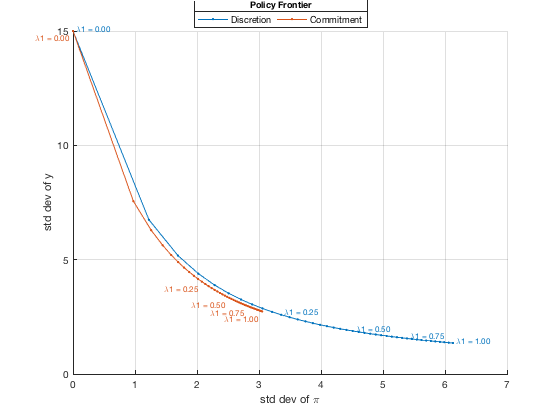

Draw Policy Frontier
Calculate the asymptotic std deviations of inflation and output under discretionary and commitment policies for a range of different weights on output in the loss function. Use the calculated points to draw policy frontiers epicting trade-offs faced by the central bank, and compare them for the two types of policies.
Contents
Clear the Workspace
Clear the workspace, close all graphics figures, clear the command window, and check the IRIS version.
clear close all clc irisrequired 20140319
Load Discretion and Commitment Model Objects
Load all three model objects created and saved previously in read_model.
load MAT/read_models.mat m1 m2 m3
Calculate ACF for a Number of Different Weights on Output
To plot a policy frontier, calculate the model-implied std deviations of inflation and the output gap for a range of different weights on the output gap (keeping the weight on inflation the same). Create a vector of a total of N values between 0 and 1. Take the existing optimal polich models, m2 and m3, create new model objects M2 and M3 by expanding the number of parameter variants to N, assign a range of different values (prepared in the vector lmb1) to the lmb1 parameter, and reset lmb2 to zero. Calibrate the std deviations of demand and cost-push shocks to 1 and 1.5, respectively.
As the next step, resolve the model objects with the new parameters, and call the function acf to compute the autocovariance function. By default, the function acf returns the contemporaneous autocovariance matrices (and autocorrelation matrices as a second output argument, if requested). To request higher order autocovariances, use the option Order=; here we do not need them. Because the model objects have N=41 parameter variants each, the size of the covariance matrices C2 and C3 in 4th dimension is 41.
The diagonal entries in the covariance matrices are the variances of the respective variables; the order of the variables in the rows and columns of the covariance matrices can be obtained by a call to the function rownames( ) or colnames( ), respectively. The function select( ) called with the names of the requested variables returns the appropriate covariance submatrix (a 2-by-2-by-1-by-41 submatrix in this case).
Retrieve the diagonal elements and calculate the squarte roots to get the std deviations of inflation and the output gap. Finally, transform the 1-by-1-by-1-by-41 vectors into columns vectors.
N = 41; lmb1 = linspace(0, 1, N) std_e = 1; std_u = 1.5;
Optimal discretion policy model:
M2 = alter(m2, N);
M2.lmb1 = lmb1;
M2.lmb2 = 0;
M2.std_e = std_e;
M2.std_u = std_u;
M2 = solve(M2)
C2 = acf(M2);
size(C2)
rownames(C2)
colnames(C2)
C2 = select(C2, {'pi', 'y'});
size(C2)
stdpi2 = sqrt(C2(1, 1, 1, :));
stdy2 = sqrt(C2(2, 2, 1, :));
stdpi2 = stdpi2(:);
stdy2 = stdy2(:);
Optimal commitment model:
M3 = alter(m3, N);
M3.lmb1 = lmb1;
M3.lmb2 = 0;
M3.std_e = std_e;
M3.std_u = std_u;
M3 = solve(M3)
C3 = acf(M3);
size(C3)
C3 = select(C3, {'pi', 'y'});
size(C3)
stdpi3 = sqrt(C3(1, 1, 1, :));
stdy3 = sqrt(C3(2, 2, 1, :));
stdpi3 = stdpi3(:);
stdy3 = stdy3(:);
lmb1 =
Columns 1 through 7
0 0.0250 0.0500 0.0750 0.1000 0.1250 0.1500
Columns 8 through 14
0.1750 0.2000 0.2250 0.2500 0.2750 0.3000 0.3250
Columns 15 through 21
0.3500 0.3750 0.4000 0.4250 0.4500 0.4750 0.5000
Columns 22 through 28
0.5250 0.5500 0.5750 0.6000 0.6250 0.6500 0.6750
Columns 29 through 35
0.7000 0.7250 0.7500 0.7750 0.8000 0.8250 0.8500
Columns 36 through 41
0.8750 0.9000 0.9250 0.9500 0.9750 1.0000
M2 =
linear model object: [41 parameter variant(s)]
number of equations: [0 5 0 0 0]
solution(s) available: [41 parameter variant(s)]
comment: 'Simple Optimal Policy Model File'
user data: empty
export file(s): [0]
ans =
5 5 1 41
ans =
1x5 cell array
{'Mu_Eq1'} {'Mu_Eq2'} {'y'} {'pi'} {'r'}
ans =
1x5 cell array
{'Mu_Eq1'} {'Mu_Eq2'} {'y'} {'pi'} {'r'}
ans =
2 2 1 41
M3 =
linear model object: [41 parameter variant(s)]
number of equations: [0 5 0 0 0]
solution(s) available: [41 parameter variant(s)]
comment: 'Simple Optimal Policy Model File'
user data: empty
export file(s): [0]
ans =
5 5 1 41
ans =
2 2 1 41
Plot and Annotate Points on Frontier
Plot the policy frontiers for the two optimal policy models as points in a plane with the std deviations of inflation on the horizontal axis and the std deviations of the output gap on the vertical axis. Annotate every 10 points on the frontier with the respective value of lmb1 (the weight on output in the loss function).
The policy frontier for the optimal discretion policy model lies somewhat above the frontier for the optimal commitment policy model, a result of the fact that the central bank does not manipulate the expectations to achieve global optimum.
figure(); hold all; grid on; h2 = plot(stdpi2(:), stdy2(:), 'marker', '.'); h3 = plot(stdpi3(:), stdy3(:), 'marker', '.'); xlabel('std dev of \pi'); ylabel('std dev of y'); le = visual.hlegend( ... 'Top', ... 'Discretion', ... 'Commitment' ... ); title(le, 'Policy Frontier'); for i = 1 : 10 : N label = ['\lambda1 = ', sprintf('%.2f', lmb1(i))]; te = text(stdpi2(i)+0.05, stdy2(i)+0.1, label, ... 'color', get(h2, 'color'), 'fontSize', 8); text(stdpi3(i)-0.05, stdy3(i)-0.1, label, ... 'verticalAlignment', 'top', 'horizontalAlignment', 'right', ... 'color', get(h3, 'color'), 'fontSize', 8); end
Show Variables and Objects Created in This File
whos
Name Size Bytes Class Attributes C2 2x2x1x41 1772 namedmat C3 2x2x1x41 1772 namedmat M2 1x41 79306 model M3 1x41 90472 model N 1x1 8 double ans 1x4 32 double h2 1x1 8 matlab.graphics.chart.primitive.Line h3 1x1 8 matlab.graphics.chart.primitive.Line i 1x1 8 double label 1x15 30 char le 1x1 8 matlab.graphics.illustration.Legend lmb1 1x41 328 double m1 1x1 21918 model m2 1x1 28946 model m3 1x1 30352 model std_e 1x1 8 double std_u 1x1 8 double stdpi2 41x1 328 double stdpi3 41x1 328 double stdy2 41x1 328 double stdy3 41x1 328 double te 1x1 8 matlab.graphics.primitive.Text
Help on IRIS functions used in This File
help model/model help model/alter help model/subsasgn help model/solve help model/acf help visual/hlegend